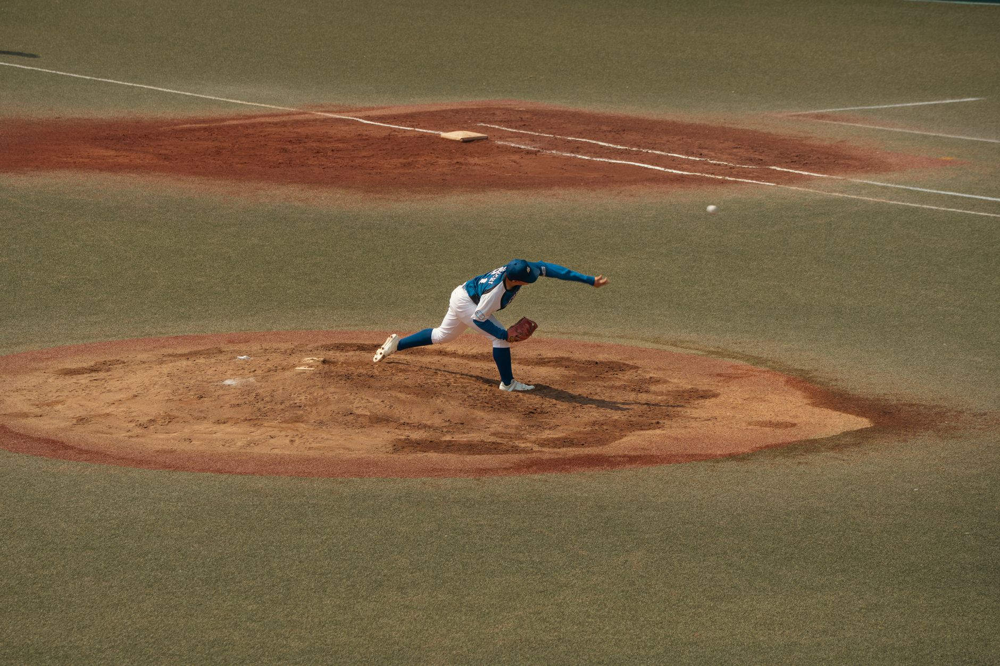

The hunt for elite starting pitching
As the current season winds down, the focus of many front offices is already shifting toward the next big cycle of roster building. In professional baseball, the difference between a playoff contender and a rebuilding team often comes down to the quality of the starting rotation. Finding a reliable, high-velocity arm that can eat innings is the most expensive and difficult task in the sport today.
The upcoming offseason is shaping up to be one of the most competitive in recent memory. Unlike years where the market is saturated with mid-tier options, we are seeing a concentrated group of elite starters who possess both the longevity and the statistical dominance to command massive contracts. These players are not just looking for a paycheck; they are looking for organizations that can build a winning culture around them.
Top tier arms dominating the rankings
When we look at the power rankings for the upcoming free-agent class, the top tier is occupied by pitchers who have redefined what it means to be an ace. These individuals have consistently stayed healthy while maintaining elite peripheral stats. For a team looking to make a splash, these are the primary targets that will likely see nine-figure deals on the table.
The ability to command the zone while maintaining elite velocity is what separates the superstars from the league average in this upcoming free-agent class.
The top-ranked pitchers in this category often share a common trait: they possess a 'plus-plus' secondary pitch that keeps hitters off-balance. Whether it is a devastating slider or a high-spin splitter, these arms have the tools to navigate deep into games, saving the bullpen and providing much-needed stability to a rotation.
Analyzing the value of durability
One of the biggest debates in MLB front offices is the balance between raw talent and physical durability. A pitcher might have the highest velocity in the league, but if they can only provide 120 innings per season, their value decreases significantly in the long term. The highest-ranked free agents in our current analysis are those who have proven they can withstand the rigors of a 162-game schedule.
Teams are increasingly using biomechanical data to assess the risk of injury before signing a major free agent. This has created a market where pitchers with 'clean' medical reports and efficient delivery mechanics are commanding a massive premium. A starter who can provide 200 innings of quality baseball is worth more than two starters who can only provide 100 each.
How teams will approach the market
The strategy for acquiring these top-ranked starters will vary wildly depending on a team's current window. Contending teams will likely go all-in on the top three names in the rankings, willing to sacrifice prospect capital to secure a frontline starter. These teams view a top-tier pitcher as the final piece of a championship puzzle.
On the other hand, rebuilding teams may look for the 'value' tier of free agents. These are pitchers who might not have the flashy strikeout numbers but offer high-floor stability. By targeting these players, teams can improve their rotation without overcommitting their long-term financial resources, allowing them to remain flexible for future trades or signings.
Preparing for the upcoming changes
As we move closer to the official start of the free agency period, the speculation will only intensify. Every outing by these top-ranked pitchers will be scrutinized by analysts and scouts alike. A single bad start or a minor stint on the injured list can drastically alter their projected market value and the ranking of the entire class.
For fans and analysts, staying ahead of the curve means watching not just the box scores, but the underlying metrics that drive these valuations. Understanding how velocity, movement, and location intersect is key to predicting which players will truly dominate the headlines this winter. It is an exciting time to be a student of the game.
If you are interested in learning more about how specific players are positioned for the market, you should check out our detailed breakdown on the Top 10 MLB Free Agents Increasing Their Stock for 2026 at https://dhyey.bond/blog/top-10-mlb-free-agents-increasing-their-stock-for-2026/. This will give you a deeper look at the rising stars who might surprise the experts.
See Also
If you enjoyed this Baseball News article, check out Top 10 MLB Free Agents Increasing Their Stock for 2026 for more useful reading.